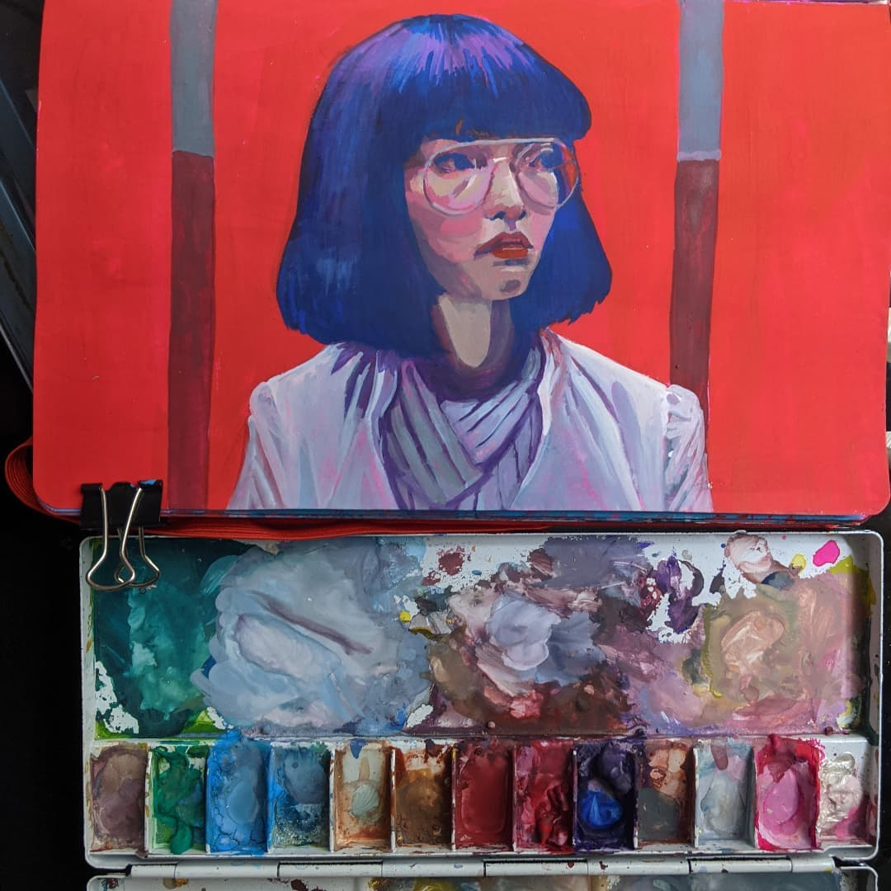
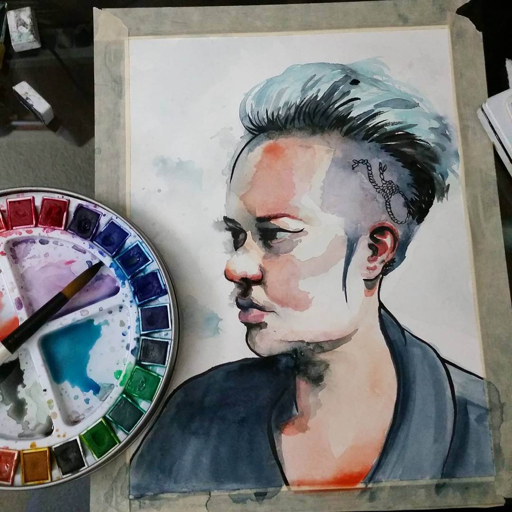
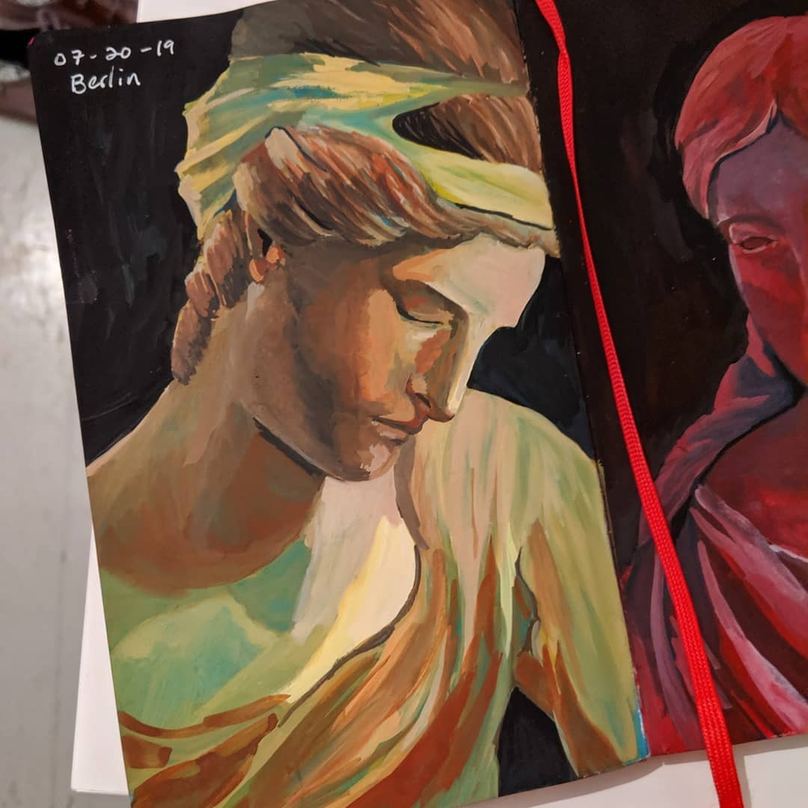
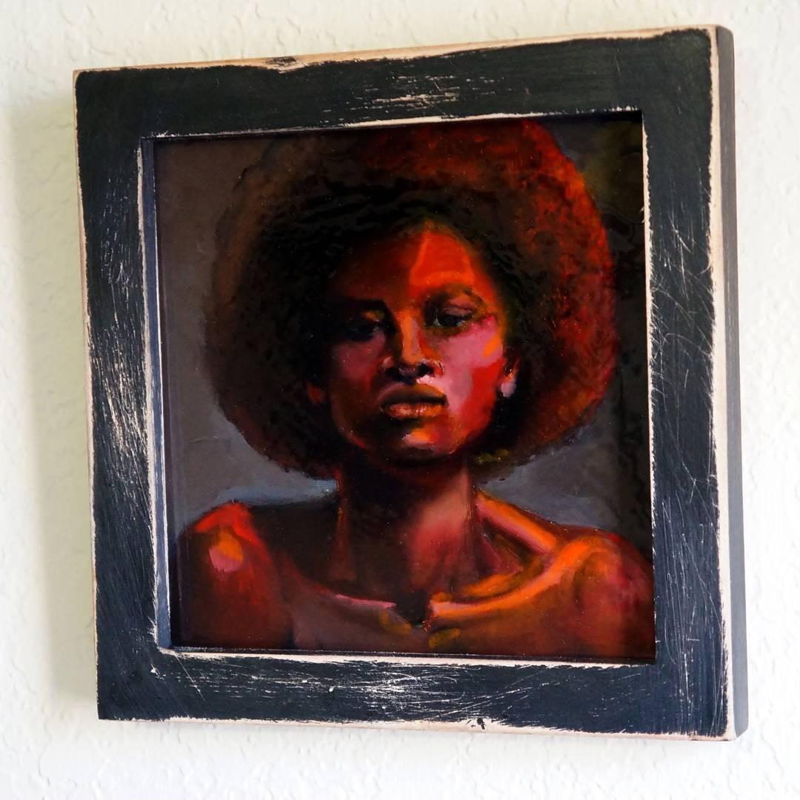

Painter & portrait artist
Shelly Weasel
Paintings in watercolor, gouache and oil, and portraits in charcoal.

01 About
A painter who thinks in layers.
I'm Shelly Weasel, a mixed-media artist working mostly in watercolor, gouache and oil. I also draw portraits in charcoal.
Most of my work starts as an idea, a feeling or simply in a sketchbook. I paint portraits, still lifes and small moments from everyday life.
This site is home for finished pieces, studies and work still in progress.
— Shelly-

Watercolor
Transparent washes, soft edges, happy accidents.
-

Gouache
Opaque, matte color with bold shapes.
-

Oil
Slow, layered and luminous.
-
Charcoal
Portraits in light and shadow.
02 From the studio
Fresh off the easel
Recent paintings, studies and works in progress, straight from Instagram.